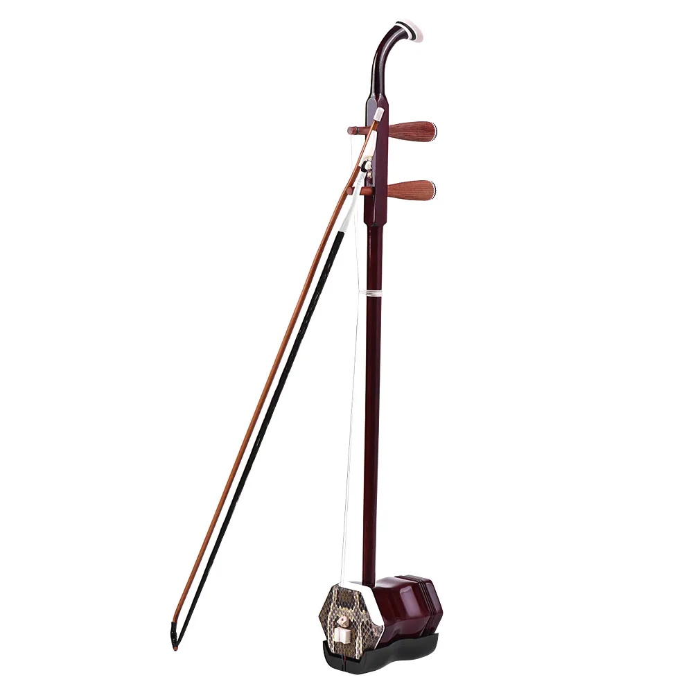

Эрху
Эрху — это струнный инструмент, обладающий древней и богатой историей, который стал неотъемлемой частью музыкальной культуры Азии. Своим уникальным звучанием и эстетикой эрху завоевал сердца слушателей и музыкантов в разных уголках мира.
Изначально эрху появился в Китае и имеет корни, уходящие в древние времена. С течением веков, этот струнный инструмент стал неотъемлемой частью традиционной китайской, монгольской и других азиатских культур. Его уникальное звучание часто ассоциируется с природой, историей и духовными аспектами восточных философий.
Эрху — небольшое, двухструнное смычковое, с двумя длинными струнами, изготовленными из шелка или стальных нитей. Музыкант играет на эрху, используя смычок, и создает удивительные по красоте и глубине звучания.
Используется в самых различных жанрах, от классической китайской музыки и народных песен до современных композиций, в которых эрху придает особый колорит и загадочность звучанию. Благодаря своей универсальности, эрху находит применение не только в традиционной музыке, но и в современных жанрах, подчеркивая свою уникальность и универсальность.